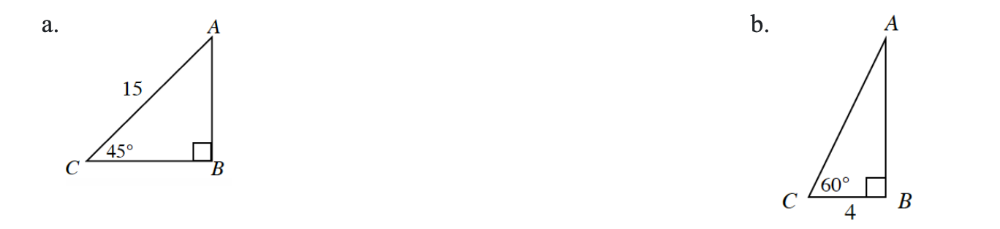

.figure-full image option. Homework Help text omitted. Figure filenames now use hyphens. Code comments included for easier editing.Solve \(\tan(x)=0\) for all real \(x\).
Evaluate each expression (in radians) and leave your answers in fraction form when appropriate. Remember the restricted ranges for the functions.
\(\sin^{-1}\left(-\frac{\sqrt{3}}{2}\right)\)
\(\sin^{-1}\left(\frac{\sqrt{2}}{2}\right)\)
\(\cos^{-1}\left(-\frac{\sqrt{2}}{2}\right)\)
\(\cos^{-1}\left(\frac{\sqrt{3}}{2}\right)\)
State the exact value of each of the following trigonometric expressions without using a calculator or referring to your unit circle.
\(\cos\left(\frac{-5\pi}{6}\right)\)
\(\tan\left(\frac{31\pi}{4}\right)\)
Graph at least two complete cycles of each of the following functions.
\(y=5\sin(3x)\)
\(y=\cos(\pi x)\)
\(y=\sin\left(\frac{\pi x}{5}\right)\)
\(y=\cos\left(\frac{\pi x}{5}\right)+3\)
Suppose a car drives \(30\) miles an hour for \(2\) hours, 40 miles an hour for one hour, and \(50\) miles an hour for half an hour.
How far does the car travel?
What is the car’s average speed?
Ryan’s calculator got a virus from a game he copied from a friend. The virus has made the absolute value function non-functional. He wants to graph the function \(f\left(x\right)=|x-3|+4\) on his calculator. Rewrite\(f(x)\) as a piecewise-defined function that will allow him to graph the function using two pieces.
As the connected complexity of mathematical concepts evolve, your mathematical knowledge evolves as well. Previous knowledge provides the necessary skills to acquire new learning. If necessary, review the Factoring Skill Builder, to strengthen your understanding of this topic.
Factor each expression completely.
\(x^4-81y^4\)
\(8x^3+2x^7\)
\(10x^2-33x-7\)
\(5x^2-34x+24\)
As the connected complexity of mathematical concepts evolve, your mathematical knowledge evolves as well. Previous knowledge provides the necessary skills to acquire new learning. If necessary, review the Special Right Triangles Skill Builder, to strengthen your understanding of this topic.
Determine the exact lengths of the missing sides in the triangles below.
